LongCat Sparse Attention：流式感知、分层与跨层索引协同设计
这篇论文来自美团 LongCat Team，一作 Wen Zan。它研究的不是一种孤立的稀疏模式，而是如何把 token 级稀疏注意力从“理论上少算”推进到“训练与服务中真的更快”。论文入口为 arXiv:2608.01662；作者还发布了 LongCat-Flash-Lite-Sparse 模型页，本轮已通过 Hugging Face 官方接口核验该 checkpoint 标识。全文以 DeepSeek Sparse Attention（DSA）的 Lightning Indexer 为基线，在 LongCat-Flash-Lite 69B-A3B、LongCat-Flash 560B-A27B，以及 LongCat-2.0 1.6T-A48B 的训练实践中讨论算法、kernel 和 serving 的共同约束。
稀疏注意力真正的瓶颈不只在“少看多少 token”，还在于能否以硬件友好的方式找出这些 token：DSA 的离散 Top-K 让 KV 访问变成低带宽的随机 gather/scatter，而 Lightning Indexer 仍需为每个 query 扫描完整前缀，长上下文下会反过来吞掉绝大多数层时延。
1. 背景和问题
标准 self-attention 对长度为 (L) 的序列需要 (O(L^2)) 的 query-key 交互。DSA 把真正的注意力限制到每个 query 的 (K) 个 token，core sparse attention 因而降为 (O(LK))；但它先要用一个独立的 Lightning Indexer 为前缀中每个位置评分。给定 query 位置 (t) 和候选 key 位置 (s)，打分为：
符号解释：(H^I) 是 indexer head 数，(q^I_{t,j}) 是第 (j) 个索引 query，所有 head 共享 MQA 风格的 key (k^I_s)，(w^I_{t,j}) 是 head 权重。ReLU 不是概率归一化，而是为了吞吐友好的相关性打分。随后执行：
符号解释：(S_t) 是 query (t) 最终选中的 (K) 个位置；随后只在这些位置的 MLA latent KV (c_s) 上计算输出 (u_t)。单个 decode query 的 indexer 成本仍随 (L) 线性增长，整段 prefill 则仍是二次量级。128K 上下文、(K=2048) 时 core attention 只看约 1.6% 的位置，但“找出它们”仍没有摆脱全前缀。
DSA 的 indexer 分两阶段训练。dense warm-up 冻结主体，只让索引分布拟合 full attention 的 head 聚合分布：
符号解释：(p_{t,:}) 是 full attention 权重跨 head 聚合并归一化后的教师分布，KL 只更新 indexer。Sparse training 沿用同一 KL 形式，但把教师权重和 scores 都限制到 (S_t) 后重归一化；主体与 indexer 联合训练，indexer 输入仍对主体图 detach，基础模型只由 next-token loss 更新。LSA 因而保留 DSA 的检索目标，只重组预算、共享索引并缩减 Top-K 候选域。
DSA 的第一个系统问题是 Indexer Output Discontiguity。每个选中 latent KV 在 BF16 下约 1152 B，只横跨 3 条 512 B cacheline；一次随机 gather 只能占用理想情况下约 50 个并发 memory slots 中的 3 个，再乘约 75% 的 packing efficiency，有效 HBM 带宽只剩峰值约 4.5%。训练反向还要对同一批不连续位置做 scatter_add；不同 core 命中相同 gradient cacheline 会把写事务串行化。第二个问题是 Indexer High Overhead：core SFA 在固定 (K) 下几乎不随 KV 长度变，而 scoring 和 Top-K 随 (L) 增长。
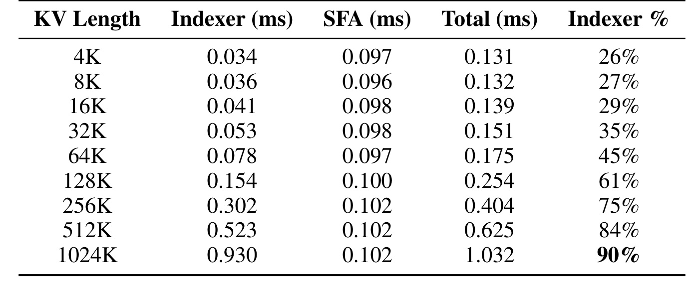
Table 1 把第二个问题量化得很清楚。KV 从 4K 增到 1024K 时，SFA 一直约为 0.10 ms；Indexer 却从 0.034 ms 增到 0.930 ms，总时延由 0.131 ms 增至 1.032 ms。约在 100K 附近两者交叉：128K 时 indexer 已占 61%，256K 占 75%，1024K 达 90%。因此仅优化 sparse-attention kernel 只能改善短上下文；越到长上下文，越必须减少 indexer 的调用次数或每次 Top-K 的候选规模。LSA 的三个模块分别对应连续访存、跨层摊销和层次化候选缩减。表中 batch、precision 与 K 固定，所以变化可主要归到 KV length；但它仍是特定 accelerator 的 microbenchmark，交叉点不能未经 profile 直接外推到其他硬件。
2. 方法
LSA 按论文原序组合 SI、CLI、HI，再用 kernel 与 KV-cache 分片兑现收益。SI/CLI 参与训练和推理，HI 无参数、只在推理期按长度启用。理解它的关键不是把三项看成同一种稀疏化，而是逐项核对固定预算、跨层复用和分层检索究竟消除了哪段时延。
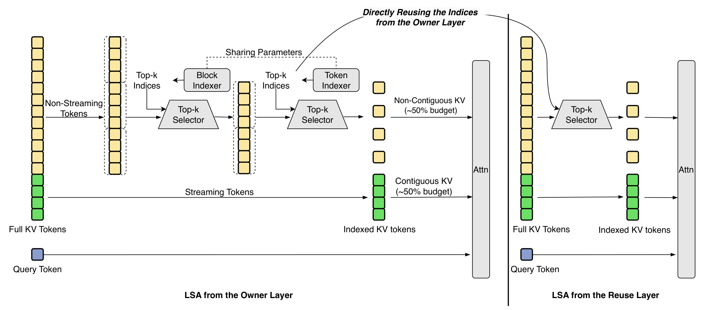
Figure 1 左侧 owner layer 先分出绿色 streaming tokens；其余位置经 block indexer 粗召回，再由 token indexer 做 Top-K，黄色动态 KV 与绿色连续 KV 一起进入 attention。“Sharing Parameters” 表示 HI 两级复用同一 indexer 表示。右侧 reuse layer 直接接收 owner indices，不再索引。图中的 owner/reuse 数据流还说明两层共享的是选择结果，而不是共享 attention 输出；sink 与滑窗预算绕过动态索引后仍会在最终 attention 中参与归一化，因此 SI 不等同于删掉局部 token。SI 改变 KV 布局，CLI 改变索引频率，HI 改变单次候选规模；三者对应不同成本维度。
2.1 Streaming-Aware Indexing：把预算拆成连续与动态两部分
SI 来自 full attention 的稳定 streaming pattern。作者在 20 个 InfBench-QA 样本、8192 长度、28 个 attention layers 上统计前 16 个 sink tokens 与最近 1024 个 tokens，由此确定固定预算而非凭经验切分。
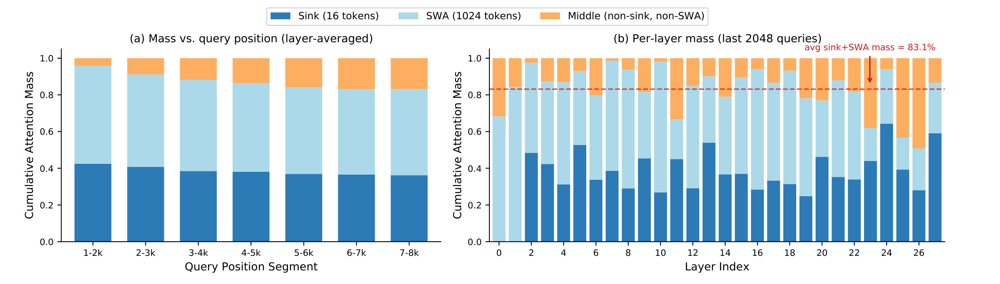
Figure 2 左图显示 sink+SWA 随 query 变长仍稳定在约 0.83；右图逐层观察最后 2048 个 queries，平均为 83.1%。剩余 17% 不能删除，因为远程 evidence 可能决定答案。图只支持预算拆分：稳定局部区域走连续路径，其余预算保留内容检索。
对 query (t)，SI 把总集合写成： 符号解释：三者互斥，大小分别为 (K_{\mathrm{sink}},K_{\mathrm{swa}},K_{\mathrm{sparse}})，且和为总预算 (K)。(S_{\mathrm{sink}}={1,\ldots,K_{\mathrm{sink}}})，(S_{\mathrm{swa}}={t-K_{\mathrm{swa}}+1,\ldots,t})。动态部分只从中间区域选择： 符号解释：默认 (K_{\mathrm{sink}}=16,K_{\mathrm{swa}}=1024,K=2048)，动态预算约占一半。Dense warm-up 仍拟合全序列，sparse training 在完整 (S_t) 上蒸馏；推理只对中间区域索引。连续预算改善读带宽并减少 backward scatter 冲突。固定比例过高会挤压远程检索，75% 与 100% fixed 消融给出边界。
2.2 Cross-Layer Indexing：用跨层蒸馏换取索引复用
CLI 先验证相邻层 salient tokens 能否共享：每层独立取 Top-K，再测 source 集合对 target attention mass 的覆盖。
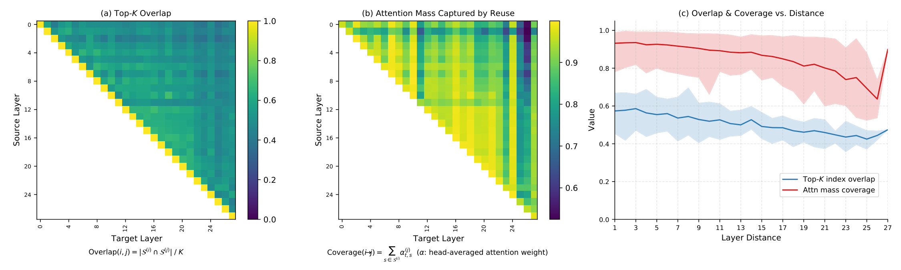
Figure 3 左、中图是集合 overlap 与复用后的 attention-mass coverage。相邻层 overlap 仅约 57.4%，coverage 却约 93.2%，说明差异多在低权重位置；距离超过 4 后最差 coverage 明显下降。CLI 因而只做短组共享：owner 执行 indexer，其余 (N-1) 层复用 (S_t)，并训练 owner 服务整组： 符号解释：(l) 是 owner，(\mathcal{L}^{(l+i)}_I) 是相对组内第 (l+i) 层的蒸馏损失；dense/sparse 两阶段都累加。推理每 (N) 层索引一次。主干取 (N=2) 以适配 shortcut 与 pipeline；三个 MTP steps 独立成组取 (N=3)，其风险体现在 draft acceptance length。
训练时 CLI 只省共享 indexer forward，组内教师与梯度仍在；推理才是一组只做一次 Top-K。无跨层蒸馏的直接复用在 128K NIAH 只得 70%，所以 reuse 是结果，group-wise supervision 才是机制。
2.3 Hierarchical Indexing：先找页，再在页内找 token
HI 把序列按 (P=128) 分页、再按 (B) 分 sub-block，并预计算 (k_n^{\mathrm{mean}})。Page score 为： 符号解释：coarse/fine 共享 (q^I,w^I)；sub-block 分数累加为 page (p)，再取 Top-(M) 页： 符号解释：(P_t) 是 Top-(M) 页，(S_t^{\mathrm{page}}) 是其覆盖的 (MP) 个候选 tokens。
第二阶段只在候选页恢复 token score： 符号解释：这与 Eq. (1) 参数相同，区别只在候选域。最终动态集合为： 符号解释：Eq. (11) 与 Eq. (1) 同参数，最终集合再与 ([1,t]) 相交。Top-K 从 (O(L)) 变为 (O(L/P+MP))；HI 无新参数，block mean 按序列缓存。
MinMax pooling 不如 (B=8) mean pooling。最终关闭浅四层 HI，并取 (M=1024) 页（128K tokens）。Coarse miss 无法恢复，必须同时设长度、层与 recall gate。
2.4 Kernel 与系统实现：HFA、两级 Top-K 和 KVP
HFA 将 (S_{\mathrm{sparse}}) 与 (S_{\mathrm{swa}}) 分发到非阻塞 SFA/SWA streams，再用 online-softmax 合并。Backward 减少离散 scatter_add 与 HBM 写冲突。
HI kernel 优化 vector-unit Top-K，而非矩阵 scoring。KVP 将 page (i) 分到 rank (i\bmod N_{\mathrm{KVP}})：prefill 用 16K chunks 与 TP=8/EP=8/PP=2/CP-KVP=8；decode 用 4K chunks，≥256K 时使用八 rank KVP。各 rank local Top-K 后 all-gather 并重排 global Top-K，partial attention 用 log-sum-exp 合并，保持全局等价。SI 将 offload chunk overlap 从 65.05% 提到 82.04%，reload 53.88→30.46 μs；CLI 异步预取后可见时延为 15.23 μs。
3. 实验结果
3.1 设置与比较口径
主实验比较 LongCat-Flash-Lite 69B-A3B 与 LongCat-Flash 560B-A27B；两者均用 MLA 和 MoE shortcut 架构。Lite 分别以 128K、512K 各训 100B tokens，560B 则以 128K 训 100B、256K 训 20B。MLA checkpoint 转为 DSA/LSA 后先 warm-up 1000 steps（约 7.5B tokens）。Lite 比较 dense MLA、DSA（(K=2048)）和 LSA，560B 仅比较 MLA/LSA。
HELMET 覆盖 recall、RAG、re-rank、LongQA、citation 与摘要，总体能力另测知识、数学和代码。消融统一在 Lite 规模，以 loss、LongEval/NIAH 和 SFT 后 HELMET 交叉验证，避免只凭训练 loss 判断检索质量。
3.2 训练与服务效率
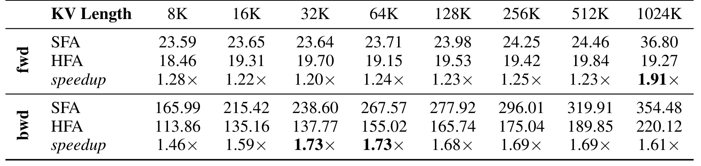
Table 2 保留完整 KV-length 表头。固定 (K=2048)、(K_{\mathrm{sparse}}=K_{\mathrm{swa}}=1024) 时，HFA forward 在 8K 为 1.28×，1024K 达 1.91×；backward 在 32K、64K 达 1.73×，1024K 仍有 1.61×。反向绝对耗时更高，例如 1024K 从 354.48 ms 降到 220.12 ms，符合减少 scatter conflict 的机制。这个表只测 core attention：CLI 主要省 indexer forward，HI 只用于 inference，故不能把整层训练收益都归因于 HFA。表格也显示不同长度收益并非单调，说明固定 (K)、通信和实现细节共同影响结果。
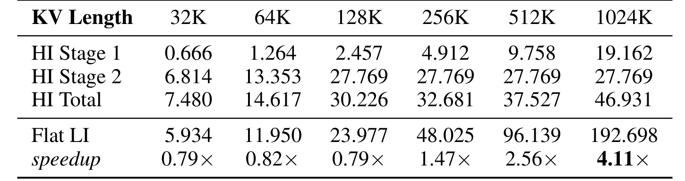
Table 4 说明复杂度下降不等于任意长度都更快。32K、64K、128K 时，Stage 2 仍几乎覆盖全序列，加上 Stage 1 和 gather，总速度只有 flat LI 的 0.79×、0.82×、0.79×；256K 才到 1.47×，512K 为 2.56×，1024K 为 4.11×。到 1024K 时 Stage 2 固定在 27.769 ms，Stage 1 随长度增到 19.162 ms，而 flat LI 已达 192.698 ms，这正是 coarse-to-fine 进入收益区间的原因。实现据此在约 200K crossover 后切换，实验从 256K prefill 开启。该表是单 operator 数据，不能替代端到端 TTFT；它证明的是 HI 的长度 gate 必不可少，并为后面的服务曲线解释“为什么短上下文不用 HI”。
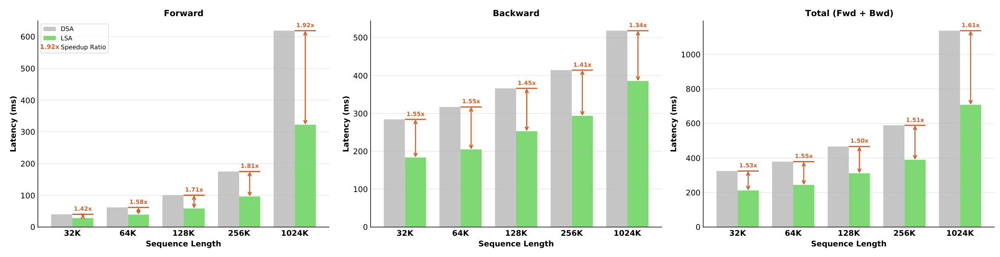
Figure 4 包含 kernel 与 context-parallel communication。LSA 相对 DSA 的 forward 加速从 32K 的 1.42× 增至 1024K 的 1.92×，因为 CLI 摊销的 indexer 随长度越来越重要；backward 为 1.34–1.55×，主要来自 SI/HFA，CLI 并未消掉组内蒸馏 backward。两者合并后的 total 为 1.53×、1.55×、1.50×、1.51×、1.61×。曲线没有随长度单调上升，说明 CP degree、通信与 backward 比重会改变组合收益。这里基线已经是 DSA，所以图衡量的是 LSA 三项改造的增量价值，不能用 HI 单 operator 的 4.11× 代表训练端到端。
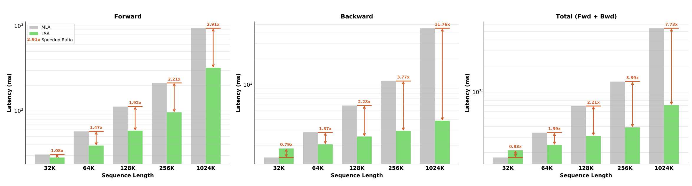
附录 Figure 10 换成 dense MLA 基线后，结论更有边界感：32K 的 total 只有 0.83×，即 LSA 更慢，因为索引固定开销尚未被 quadratic attention 抵消；64K 开始为 1.39×，128K 为 2.21×，256K 为 3.39×，1024K 达 7.73×。Backward 在 32K 同样只有 0.79×，到 1024K 才达 11.76×。这些是固定长度 microbenchmarks，真实混合数据 packing 的 practical crossover 约在 128K。图的三个面板还说明 crossover 首先出现在 forward、随后由昂贵的 dense backward 放大；因此“原生百万上下文训练”是受益区间，不代表中短上下文模型都应换成 LSA。
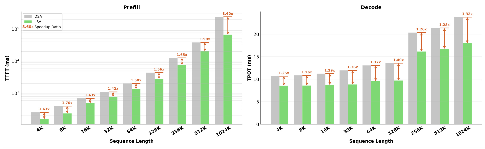
Figure 5 中 prefill TTFT 使用对数轴，LSA 相对 DSA 从 4K 的 1.63×、32K 的 1.42×，逐步增长到 512K 的 1.90× 和 1024K 的 3.60×；长 prefill 的 indexer 占比上升，CLI 与 HI 更能发挥。Decode TPOT 为 1.25–1.40×，128K 达峰值 1.40×，256K 以后回落到 1.26–1.32×，不是算法失效，而是 serving 切换 KVP 后每个 rank 的 KV 变短，DSA 基线 indexer 也被分摊。作者还报告三步 MTP 的平均 acceptance length 为 3.11，对 dense MLA 的 3.15，说明共享 MTP index 对 speculative efficiency 影响较小。
3.3 质量主结果
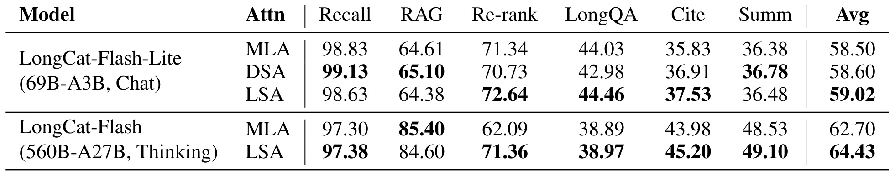
Table 7 在 Lite 规模上给出 MLA 58.50、DSA 58.60、LSA 59.02 的平均分；分项没有一方全面占优，LSA 在 Re-rank、LongQA、Citation 较高，而 Recall/RAG 略低，符合“总体持平”而非“稀疏注意力全面提升”。560B thinking 模型上 LSA 为 64.43、MLA 为 62.70，差异主要来自 Re-rank 71.36 对 62.09。作者检查发现 MLA 生成更长、更多响应触及最大 generation length，截断影响了 re-rank 分数；因此这 1.73 分不能直接归因于更好的注意力。标准通识、推理、代码表中也没有稳定赢家，例如 Lite 的 GPQA 为 69.51/68.72（LSA/MLA），HumanEval+ 都是 86.59，而 AIME 2025 LSA 为 64.27、MLA 为 59.90。更稳妥的结论是 LSA 在两种规模上没有出现系统性能力坍塌。
3.4 SI 与 CLI 的消融边界
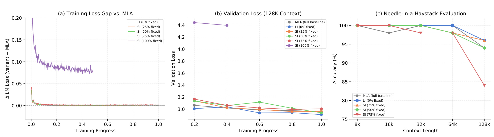
Figure 6 同时提醒我们不能只看 pre-training loss。0–75% fixed 的 loss gap 都接近零，但 100% fixed 显著变差；到 NIAH 128K，75% fixed 已降到约 84%，而 0%、25%、50% 仍约 94–96%。SFT 后 HELMET 平均分为 MLA 55.88、LI 56.10、SI 50% 56.59，支持默认约 1:1 固定/动态预算。固定窗口越大，HFA 越容易合并连续访问；但 75% 的远程检索预算只剩四分之一，训练 loss 被大量短样本稀释，直到专门的长检索任务才暴露失败。这也是为何方法设计必须配 long-context task，而不能只根据吞吐调 (K_{\mathrm{swa}})。
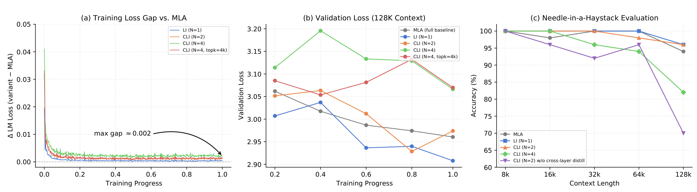
Figure 7 对 CLI 给出更尖锐的反例。(N=4) 的最终训练 loss gap 仍低于约 0.002，甚至把 Top-K 从 2K 加到 4K 也不能修复长上下文 validation；NIAH 在 128K 降到约 82%。(N=2) 保持约 96%，而从独立训练的 LI 模型直接删除冗余 indexers、不给 cross-layer distillation 的版本只剩 70%。SFT 后 HELMET 平均分为 CLI (N=2) 55.78、LI 56.10、MLA 55.88，说明保守两层共享可以保持总体质量。这里的因果链很明确：更大预算解决不了 owner indexer 的 teacher mismatch；必须让共享 indexer 在训练时看到每个 reuse layer 的 attention target。
3.5 HI、1M 模型与选择行为
HI 的三个配置消融相互约束。Mean pooling 在 NIAH 128K、(M=128) 页时，(B=8) 得 80，MinMax 同配置只有 60；关闭前四个 indexers 的 HI 从全层启用的 84 提到 92；在 MRCR 512K 上，召回 256/512/1024 页分别为 24.32/23.09/30.28，LSA 不用 HI 为 27.07。最终选择不是每个小表单独最优，而是 (B=8)、浅四层关闭、(M=1024) 共同构成保质配置。
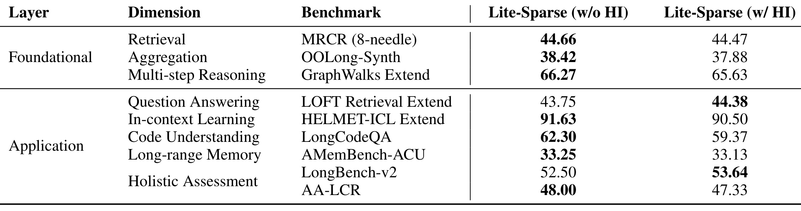
Table 15 直接观察 training-free HI 的任务级代价。九项中多数变化约在 1 分内：MRCR 44.66→44.47、OOLong 38.42→37.88、GraphWalks 66.27→65.63、AMemBench 33.25→33.13；LOFT Retrieval 和 LongBench-v2 反而有小幅波动上升。最明显下降是 LongCodeQA 62.30→59.37，HELMET-ICL 也从 91.63 到 90.50。这说明 HI 的 coarse recall 不是严格无损，且代码理解可能更依赖分散的精确 token。表格支持的是“总体可接受的效率—质量权衡”，不是所有任务无损；生产启用应按 task、长度和 SLA 共同 gate。
LongCat-Flash-Lite-Sparse 将原生上下文从 128K 扩展到 1M，训练阶段依次为 32K、64K、128K、256K、1M，并在 128K 开始把 MLA 转为 LSA；SI/CLI 参与训练，HI 只在推理打开。Table 16 还报告 sparse 模型在 SWE-Bench Verified、工具使用和搜索上高于旧 dense 版本，但两版训练语料和长上下文流程并非严格单变量控制，不能把 agentic 提升归因于 sparse attention。能直接归因的证据应优先看同 checkpoint 的有无 HI、同训练设置的 MLA/DSA/LSA 和模块消融。
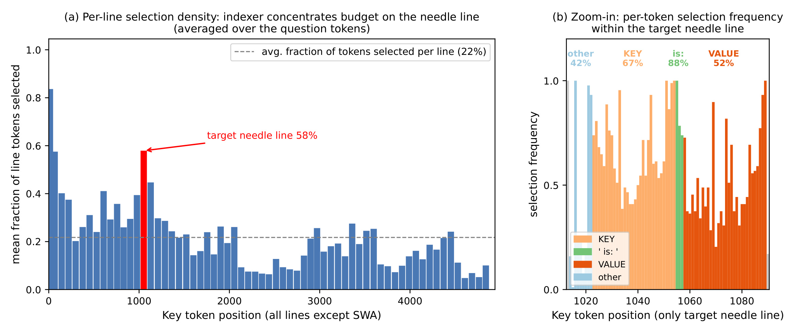
Figure 14 用一个约 6K tokens 的多键 NIAH 样本检查“indexer 到底选了什么”。左图中目标 needle 行被 question queries 选中的比例为 58%，所有非 SWA 行平均只有 22%；右图继续拆目标行，KEY、连接词 “is:” 和 VALUE 的平均选择率分别为 67%、88%、52%，其余 token 为 42%。附录还报告 owner/reuse 层的 Top-K overlap 约 0.56–0.66，但保留 full-attention mass 达 0.95–0.98。案例说明 KL 蒸馏学到的不是机械复制 dense Top-K，而是优先覆盖少数高质量的语义证据；不过它只有一个代表样本，不能替代跨数据集错误分析。
4. 总结
4.1 我的判断与工程迁移
LSA 最有价值的地方是把 sparse attention 的收益拆成可测的四层链条：SI 把约一半预算变成连续访问，CLI 让一次索引服务相邻层，HI 把全前缀 Top-K 变成 page recall 加 token refine，HFA/KVP 再处理 stream overlap、scatter conflict、cache 分片与跨 rank 合并。证据也基本对应这些层次：Table 1 定位瓶颈，Figure 2/3 给出结构动机，Table 2/4 与 Figure 4/5 测效率，Figure 6/7 和 Table 15 测质量边界。这种“算法结构—kernel—serving—专门消融”闭环比只报 sparsity ratio 更可信。
对长文 RAG、代码仓库 agent 和推荐系统超长行为序列，迁移顺序应当是：先 profile scoring、Top-K、gather/scatter 与通信占比；再验证 sink/window 的 attention mass 和跨层 coverage；随后分别灰度 SI、CLI，最后只在超过 crossover 的 prefill 打开 HI。推荐链路若以稀疏行为序列作用户建模，还应把“needle”换成真实长尾兴趣、最近意图与跨域行为，观察动态预算是否偏向高频近期事件而漏掉低频关键证据。
4.2 局限、风险与后续跟进
五项边界需要保留：结果绑定 LongCat 的 MLA、MoE shortcut 和目标 accelerator，换硬件后 crossover 未必相同；LSA 降计算却不减总 KV-cache，只能靠 KVP/offloading 缓解单卡压力；HI 的 coarse miss 不可恢复，LongCodeQA 约 2.93 分下降暴露任务依赖；1M native context 不代表所有位置被均匀利用；checkpoint 虽已核验，训练数据、完整 fused kernels 与 1.6T 基础设施仍未完全开放。
后续应优先做三件事：其一，在相同 checkpoint 上公开长度×batch×硬件的完整 TTFT/TPOT、HBM throughput 和通信 profile，确认收益能否跨设备复现；其二，把 HI 的 (M)、浅层 bypass 和启用长度改成按任务风险自适应的 gate，并专门复测代码、检索与多轮 memory；其三，结合 Cross-Layer Attention 或 sequence-dimension KV compression，检验计算稀疏与 KV 存储压缩是否能叠加且不放大召回误差。还应跟踪无蒸馏复用、(N=4) 和 75% fixed 这些已知失败配置，因为它们比最佳点更能定义系统上线时不可越过的边界。